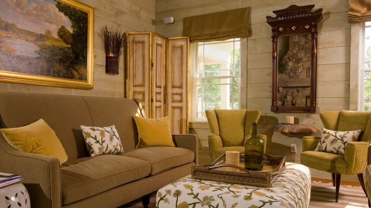

.png)
.PNG)
.PNG)
.PNG)
.PNG)
.PNG)
.JPG)
.JPG)
.PNG)
.PNG)


I’ve got a really beautiful place to share with you today. If you read my posts this summer, you know how much I love Kennebunkport. Well, a new boutique resort opened there in 2008 called Hidden Pond, and they have added 3 new cottages in 2011. When we go back to Maine I hope we get to stay there (especially if it is in the fall.) Let me show you around.
It has an “arts and crafts inspired” lodge …
with a beautiful sitting area.kiwicollection.com
You have your choice of 20 different little cottages at Hidden Pond. This is the Moonwatch cottage…
and here is the Hummingbird cottage. I believe all of the cottages have a screened porch.
Each cottage has its own uniquely styled interior. hiddenpondmaine.com
hiddenpondmaine.com


They also have a restaurant named Earth that has received much recognition.  hiddenpondmaine.com
hiddenpondmaine.com
Among the things that I have read of the resort, my favorite has to be this little building – the Potting Shed. It is used for private dining.
Here is a better view of the interior of this cozy little space. hiddenpondmaine.com
hiddenpondmaine.com
There is also a unique spa on site at Hidden Pond. When they first opened, they used upscale tents for their spa rooms, but the guests complained about insects and being cold. So they built these tiny buildings that are connected with elevated walkways, and they named their spa the Tree Spa. Appropriate, right?

Take a look inside one here.

So you have your room, your food, and your spa treatments. What else is there to do at Hidden Pond? They have gorgeous gardens (flowers and vegetables.) Besides being able to wander around these pretty places, you can also have a session with their head gardener to learn about the plants they use.
Or if you have a desire to be artistic and paint, they have an artist’s studio and an artist-in-residence who can help you perfect your skills.
They are located one mile from Goose Rocks beach, and they have beach cruiser bicycles available for your use. They will also shuttle you over to the beach in their 8 person golf cart. In the past they used this surfboard topped ’56 Ford wagon named Bessie for the shuttle, but I believe Bessie is out of commission now because she is no longer featured on their website.
There are many more activities from which to choose – from yoga to stand-up-paddleboarding lessons, but my favorite would probably be the nightly bonfires that they offer both at the lodge and at Earth restaurant – s’mores making included! 🙂
I am sure that any time of day is pretty there, but night looks especially beautiful to me.
What do you think? Are you ready to pack your bags and head to Maine? I hope so, and I hope I have given you another idea of a place to stay in Kennebunkport if you happen to go there one day. Unfortunately, I can’t make a trip up there today, but I can head outside into our wonderful 56 degree (Maine-like :)) weather! Enjoy your day.
until next time…


.PNG)
Had to read the post on Kennebunkport as it drew my eye (being a down east New Englander) what a lovely place. Today is a ten here on the N.E.coast, the kind of day where they take lots of pictures that showcase fall’s glory. Am enjoying scrolling through many of your posts, it is my first visit here, sent by the indomitable Rhoda. I loved viewing your home and all your seasonal decorating, just lovely. Hope to become a regular visitor, thanks!
————————————————————————
Hi Paula! Even though I would say it is also a 10 here today, I would LOVE to be in New England with this gorgeous weather. I bet it is gorgeous! I have a number of posts on Maine, so I hope you enjoy them. So glad you found your way over here from Rhoda’s! Thank you for taking the time to leave a sweet comment. I do hope you will come back again.
Enjoy your Sunday afternoon.
Kelly
Kelly, I am like you and live here in Ga. and love New England and we just got back from a short trip there. Was disappointed that it was extremely foggy when we visited Martha’s Vineyard. Visited Maine many years ago and would love to go back.
————————————————————————-
Kim – Oh I am jealous…we didn’t get to go to Martha’s Vineyard on our trip. Maine was gorgeous when we were there. We too had fog but it did burn off to a pretty day most of the days we were there. I would love to go back too.
Kelly
Oh my goodness. SO many good ideas. Being a Southern girl, I’ve never even thought of going to Maine on vacation. Can’t wait to spend some time looking over their website. Thanks.
P.S. I found you today via Julia at Hooked on Houses. I’m really enjoying your posts (as I’m sure you can tell from my comments on EVERY post. Sorry)
————————————————————————
Missy – Oh Maine is wonderful! Yes, there are a lot of good vacation places around here in the South and much to see, but for some reason I just like seeing New England. I am thrilled you found the blog through Julia, and you just go ahead and leave all the comments you want! I don’t call the blog “TALK of the House” for nothing! 🙂
Kelly
Hi Kelly, looks like another wonderful place to visit! After Blackberry Farm- I enjoyed your posts! The potting shed dining is so cute, and Kennebunkport looks wonderful. We’re enjoying this nice Maine like weather too!
take care,
Robin
————————————————————————
Robin – Wouldn’t that be a great place to vacation? I love Blackberry Farm, too. So happy you enjoyed the posts on it. Hallelujah for this wonderful weather! Thanks for reading and leaving your kind words here.
Kelly
Hey Kelly,
After years of wanting to see Maine, my husband took me this past summer! We went to Pemaquid Point and stayed in the hotel on the point with the same name. We were just yards from the water and the oldest lighthouse in America!
Kennebunkport is on my list to see as well! Must check out the yarn and knitting shops in the vicinity as well as the golf courses. Those two always drive our destinations!
——————————————————————–
Wanda – You and Katie are making the rest of us so jealous of your travels to Maine! Your trip sounds amazing. I love lighthouses! Yarn and golf – unusual combination, but it sounds like it would be a good one for choosing your stops on your trip. Makes everybody happy, right? So glad you dropped in to tell us about your trip to Maine (even if we are jealous of you too. Ha ha)
Kelly
Kelly,
I just ran out of room to write any more “bucket list places to visit”…thanks to you. 😀 This one really looks amazing but so have the others. How fun it would be to stay in one of the newer cottages.
Karen
P.S. I baked your apple cake yesterday…it was a huge hit. I brought half to work (so that Hubby and I wouldn’t gain 10 lbs after eating all of it by ourselves) and it was gone by mid-morning.
———————————————————————-
Karen – If you visit Maine, I hope you will get to visit Hidden Pond. It just looks like a beautiful place all around…from the cottages to the gardens to the restaurant. I am so glad you liked the apple cake. Wasn’t that sauce you top it with addicting?? I could just eat it by the spoonful! Ours doesn’t last long around here either.
Kelly
I think Cathy has the right idea with taking off work & traveling. That is a wonderful idea! Thanks so much for sharing all these places. Alot of these are places that I would never hear of so thanks for that. I’ll have to keep them on my list of places to visit when possible. 🙂
———————————————————————
Stephanie – I am glad you are enjoying all the inns! I would love to travel to Maine and stay at Hidden Pond. Hopefully we can all visit it one day. Thank you for adding to the conversation here!
Kelly
Hi Kelly!!
I would LOVE to go to Maine and this resort looks wonderful.
———————————————————————-
Phyllis – We should all just pack our bags and go to Maine! I bet the leaves are beautiful this time of year.
Kelly
Wow! You keep finding all these charming places that I wish I could visit. I love all those beautiful gardens, so neatly edged by the brickwork. After the drought and heat of this summer, I have said I am just through with gardening but after looking at that, wellll….I guess hope springs eternal for a little rain next year.
———————————————————————-
Minnie – The landscaping at Hidden Pond is beautiful..not just the gardens but all around each cottage looked pretty neat too. I would love to take a class with their head gardener..although the weather in Maine is so different from here I am not sure it would be applicable. Hopefully you will get more rain next summer.
Kelly
Kelly,
Hey stranger! Don’t you love, love, love Kennebunkport? T and I just got back from there about a month ago. He had a business meeting in Boston so I tagged along so we could celebrate my birthday in my favorite state. We stayed in Kennebunkport and Camden! It was heaven! No gnats, cool weather, good food…I did NOT want to leave. This place is divine! Wish we would have stayed there 🙂 If you go back this fall, take me with you!!! 😉 Hope youre enjoying the cooler temp today, finally some fair weather! Ha!
———————————————————————–
Katie – I have missed you around here! So jealous of your recent trip to Maine. You aren’t too far from me..you should have thrown me in your suitcase! I bet you saw lots of good things and ate some delicious food. Oh yes, I enjoyed today’s weather! This is our fall break, so I am so glad the weather is cooperating. Thank you for visiting here today and adding to the conversation (even if we all are jealous of your travels! Ha ha)
Kelly
Hi Kelly,
OK. It’s official. I’ve decided I have to take one whole year off and just travel from one of these wonderful retreats (that you have brought to our attention) to another. Imagine that! Oh my, I just can’t wait!
Thanks for sharing the dreams!
Cath
———————————————————————-
Cath – I think that is a grand idea! You write us all and let us know about your experience at each of them. I could take a year off and just travel around Maine. There seems to be so many great places to visit there. So glad you liked Hidden Pond.
Kelly
Love the “potting shed”! What a great place!
——————————————————————–
Sarah – The potting shed was my favorite too! Wouldn’t that be a great place to get engaged?!
Kelly